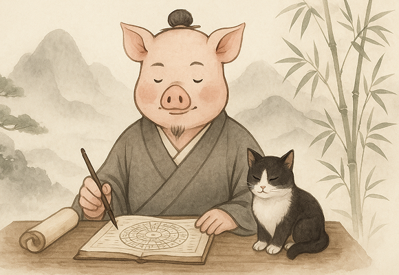

豬大仙
- 學自東派紫微，從業10年
- 擅長結合心理學解釋命盤，語氣溫和實用
- 命不是算出來的，是活出來的
- 貓派
- 報憂不報喜
- 不是在看盤，就是在看盤的路上
透過專業紫微斗數排盤，解析個人命格結構，了解內在性格與人生方向，幫助你在迷惘中找到清晰定位。
無論是結婚、搬家、開業，擇日都是開啟好運的第一步。根據你的八字量身規劃黃道吉日，讓每一個開始都更順利。
結合八字與流年運勢，深入剖析財運、感情、事業等關鍵面向，掌握最佳 行動時機，趨吉避凶，為人生提前佈局。
分析您與對象的命盤合度，探討性格互動、相處潜力與未來發展走向。
咖啡店老闆 彰化
我是開店創業的人，很多事情都得靠直覺和經驗，但經過幾次經營瓶頸，我開始思考是否還有其他角度能協助決策。經朋友介紹認識豬大仙，他幫我看了開店的時辰與店面格局，甚至指出我的Logo設計有小小破格，會影響整體氣場。照他的建議微調之後，生意真的有比較順，客人也反映空間感覺更舒服。我不是迷信的人，但我相信結合專業與直覺的智慧。
軟體工程師 台中
剛進入30歲，一直很焦慮自己是不是選錯工作 方向，人生到底有沒有在往對的路上。豬大仙幫我看了一次大運與本命盤，解釋得很細，每一段流年都能對應到我的人生轉折，真的有種命盤是人生成績單的感覺。他不會強硬說你該怎樣，而是提供一種分析和參考，讓你有信心做選擇。我覺得這才是我需要的命理師：不只是預測未來， 而是理解自己。
上班族 台北
本來只是好奇想算一下流年，結果豬大仙直接點出我一直沒說出口的煩惱，嚇到！而且還很溫柔地給了我具體建議，真的有被療癒到~
自由工作者 高雄
跟男友吵架吵到快分手，朋友推薦我找豬大仙做合盤，居然分析得超精準，連我們什麼時候容易起衝突都說得出來，超神後來我們也慢慢找到彼此的相處方式。
品牌行銷 彰化
我一直對命理抱著半信半疑的態度，但某天在低潮期無意間滑到豬大仙的文章，覺得他的觀點很接地氣，不像一般命理師那麼高高在上。實際預約後,我完全被說服。他不只是把命盤讀出來，而是用很有邏輯的方式讓我理解自己當下的情況、個性矛盾的根源，甚至給了我幾個能立刻實踐的方向。這不只是一次命理諮詢，更像是一次自我認識的深度對話。
插畫師 新北
豬大仙的感情合盤真的神準。我和男友一直相處上有些問題，吵架的點很固定，但又說不上來到底為什麼。他分析了我們雙方命格的互動特性，指出我們在表達情緒這塊完全不對頻，讓我整個豁然開朗。也因為他給的具體建議，我開始調整溝通方式，關係有很大的改善。現在我們每半年還會一起來複盤一次流年運勢，當成感情健檢！